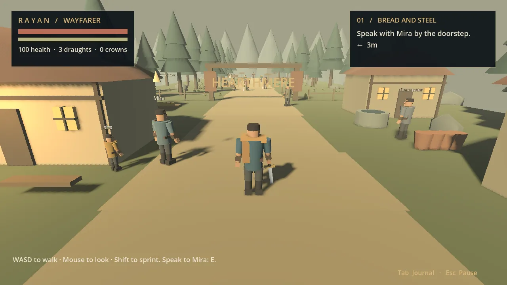
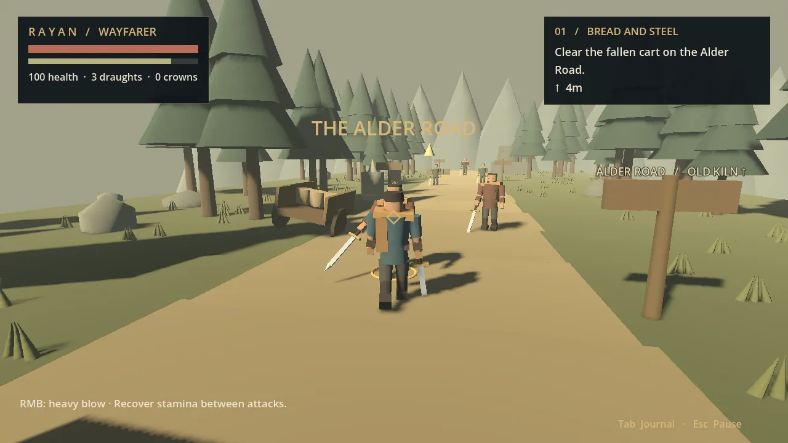
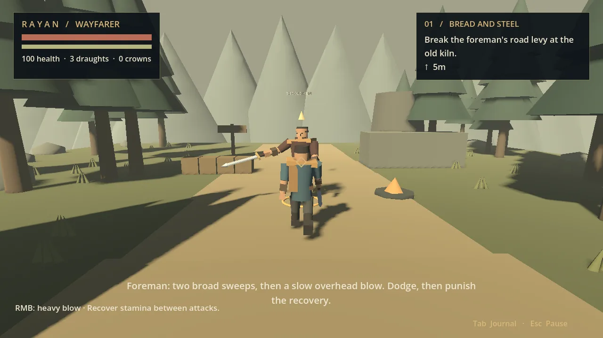

Commit to the blade
Light and heavy attacks, directional guard, timed parry and a stamina dodge. Break posture to create an opening.
An original single-player sword adventure
Face the Cinder Warden in the revised Ashen Trial: an armored duel built around committed cuts, guard timing and a costly opening.
Windows candidateNative Windows · Offline · No account required

Choose your build
The current source candidate contains the revised Ashen Trial and the earlier six-chapter campaign archive. Extract its Windows ZIP, then open AshenVow.exe.
Public release unavailable. Ask the repository owner for the local Windows candidate; no public download has been published.
Download for WindowsUnsigned candidate. Human acceptance and target-laptop testing remain outstanding. APK files are for Android, not Windows.
Run Get-FileHash -Algorithm SHA256 .\AshenVow-…zip in PowerShell. Compare the whole value with the manifest from that same release.
No artifact metadata loaded.Beyond the ordinary day
Begin with family, a paid protection job and the hope of supper. Follow the Cinder Ledger’s trail through riverside mills, guarded roads and a realm beyond the familiar.
Read an opponent’s intention. Spend your stamina carefully. Return to a shrine, remember what brought you here, and try again.
The earlier campaign is a short prototype with checkpoints and chapter replay. Current art and animation work is concentrated in the separate Ashen Trial.
Light and heavy attacks, directional guard, timed parry and a stamina dodge. Break posture to create an opening.
Earn a tempered edge and a later defensive ability. Keep discoveries, purchases and hard-won checkpoints.
Story difficulty, subtitle sizing, rebinding, reduced effects and separate audio levels. No network or grind required.
From the game
Actual pass-one captures, compressed for this page.
Historical images, not current-build visual acceptance.


Captured in Godot Compatibility at 720p on an Intel i7-1185G7 / Iris Xe development machine. These are gameplay images, not a Ryzen 5500U benchmark.
Windows / x86_64
Unsigned: no code-signing identity is configured. Keep Windows security enabled. If it blocks the candidate, preserve the message and report it to the owner.
Arrows + Enter navigate menus. Settings → Controls changes keyboard/mouse bindings. Controller mapping is implemented; physical controller testing is outstanding.
Ordinary death retries a checkpoint. Story progression is separate. Back up %APPDATA%\AshenVow\ while closed; new versions use that same save folder.
Before you play
Windows x86_64 with OpenGL 3.3-capable graphics. Start at 720p, 30 FPS cap and low settings. This is a design target, not a measured minimum specification.
Ryzen 5 5500U · 16 GB · integrated Radeon: not tested. Full rendered review, sustained performance, physical inputs and audio listening remain open. Headless campaign tests verify behavior, not FPS.
The trial uses credited artist-made armor, retargeted authored motion and simulated mantles. The campaign archive retains its earlier prototype art. This does not match AAA visual quality; native rendering, camera comfort and physical inputs still need human review. Android device acceptance is incomplete.
Combat buffering, feedback, rebinding, graphics/audio controls and a local benchmark route. Six playable chapters, save migration, chapter replay and the ending were introduced in earlier passes.
Troubleshooting & save recovery →
No public issue tracker is configured. Send BUILD.json, reproduction steps, settings and logs\godot.log to the repository owner. Keep personal files out of reports.